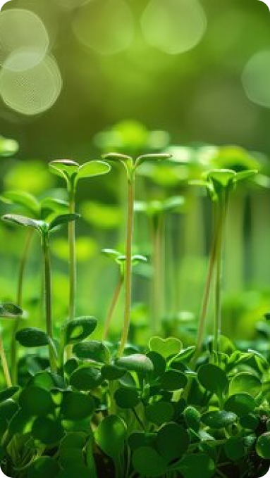

Welcome to the Research Hub of Org Nature Life Foundation—dedicated to the exploration of sustainable agriculture, community-driven natural food production, and the advocacy of a holistic lifestyle. Our commitment is deeply rooted in the principles of nature-centric living, emphasizing the interconnectedness of our existence with the entire universe.

Sustainable Agriculture
Cultivating Harmony with Nature
Objective:Promoting agricultural methods that sustain the health of soil, water, and air while contributing to community well-being
Research Initiatives: Reviving traditional farming practices, embracing biodiversity, and fostering an ecosystem in harmony with nature
Community Sharing
Nurturing Natural Food Production
Objective: Empowering communities through the sharing of natural methods for food production.
Research Initiatives: Workshops, collaborative projects, and educational programs fostering environmentally friendly, community-cultivated sustenance.
Collaboration with Scientific Community
Objective:Bridging traditional wisdom with scientific advancements for a knowledge ecosystem rich in heritage and cutting-edge research.
Collaboration Focus: Ensuring evidence-based initiatives that contribute to the global discourse on sustainable living.
Nature Way of Life
Food as Medicine, Medicine as Food
•Philosophy: Advocating for a nature-centric lifestyle recognizing the intrinsic healing properties of food.
•Approach: Promoting mindful nutrition aligned with natural rhythms for holistic well-being.
Interconnected with the Universe
Panja Bootham
•Belief: Recognizing our bodies as composed of Panja Bootham—Air, Water, Earth, Sky, and Fire.
•Central Ethos: Promoting practices that revitalize and protect these essential elements under threat from modern pollutants
Motto
Revitalizing Our Elements
•Mission: Actively contributing to restoring balance in polluted elements—soil, water, air, sky, and fire.
•End Goal: Fostering a world where humanity lives in harmony with the elements, embracing the interconnected dance of life.